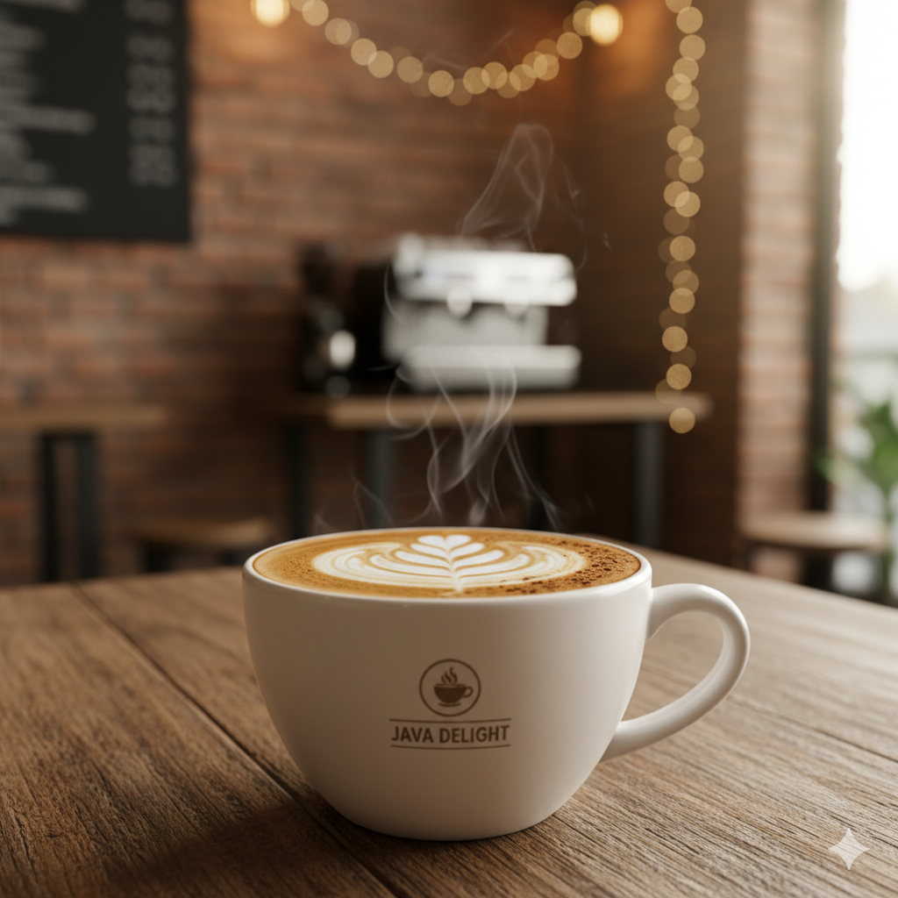
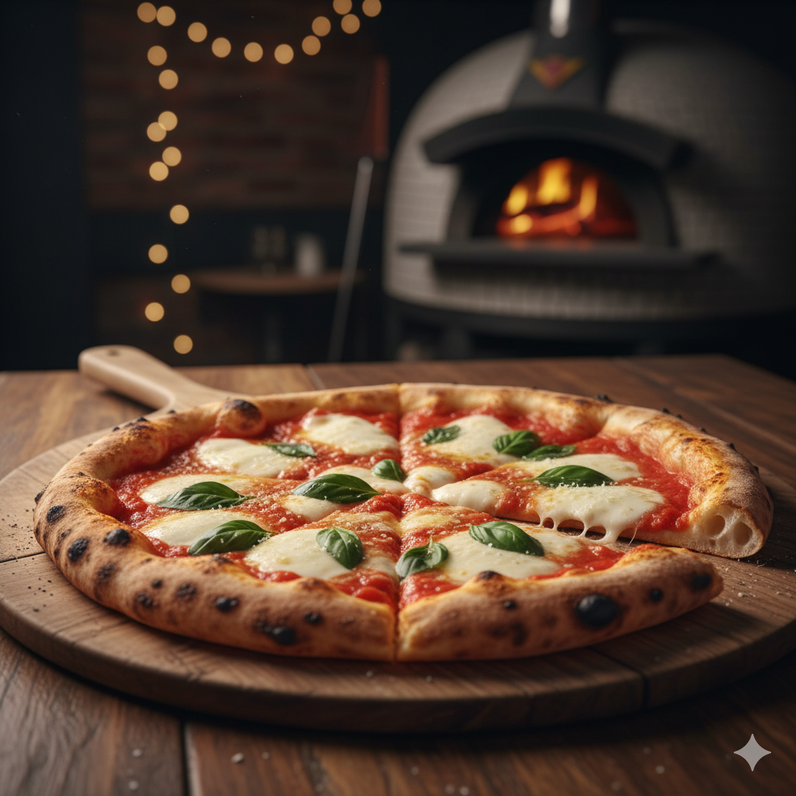
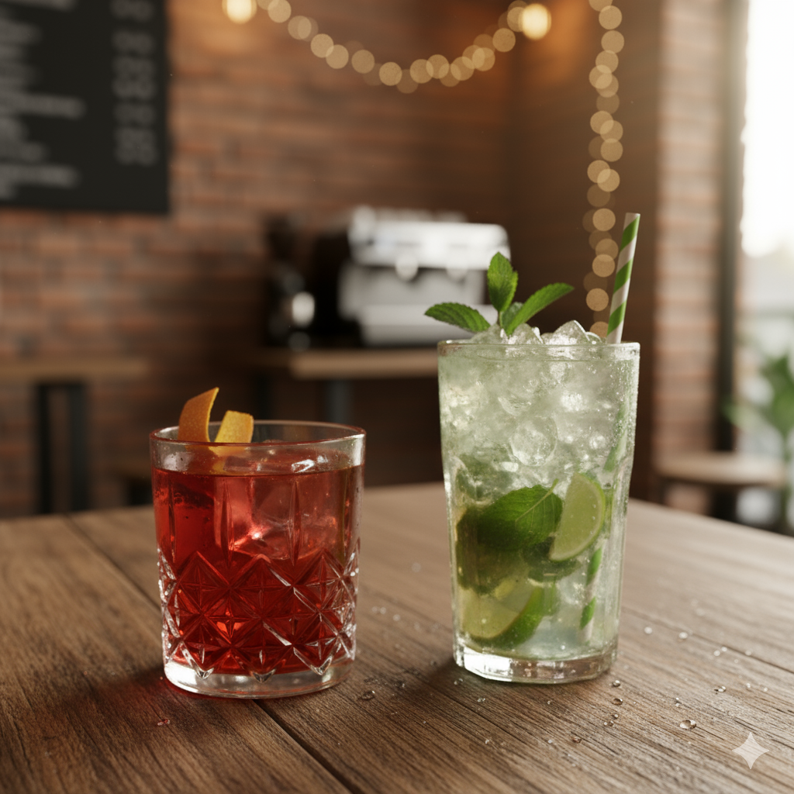
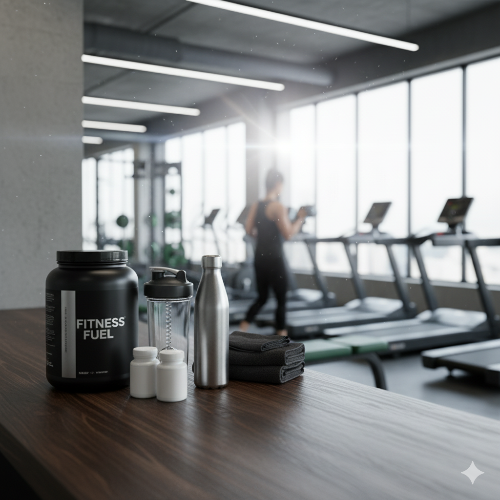

Una taza de café latte con arte en la espuma, humeando suavemente,
sobre una mesa de madera. El fondo muestra un ambiente de cafetería
acogedor con luces colgantes, una pared de ladrillo y una máquina de
espresso. La taza tiene un pequeño logo "JAVA DELIGHT".

Una pizza Margarita recién horneada, con queso mozzarella derretido y
hojas de albahaca fresca, servida en una tabla redonda de madera. Una
porción ha sido cortada. Al fondo, se aprecia un horno de leña con
llamas y luces decorativas.

Dos bebidas refrescantes sobre una mesa de madera. A la izquierda, un
trago rojo en un vaso grabado con hielo y una cáscara de naranja. A la
derecha, un Mojito con hielo picado, limas, hojas de menta y una
pajita de papel, con un fondo de cafetería.
Un teclado mecánico con iluminación RGB y unos auriculares de diadema
negros con un logo triangular, conectados con un cable, sobre una
superficie oscura. El fondo es un patrón de líneas geométricas y
paneles de interfaz de usuario holográficos creando un ambiente
futurista.

Un bote grande de proteína con la etiqueta "FITNESS FUEL", un shaker,
dos pequeños botes de pastillas y una toalla plegada, todo sobre una
superficie de madera. El fondo es un gimnasio moderno con grandes
ventanales, máquinas de cardio (caminadoras).